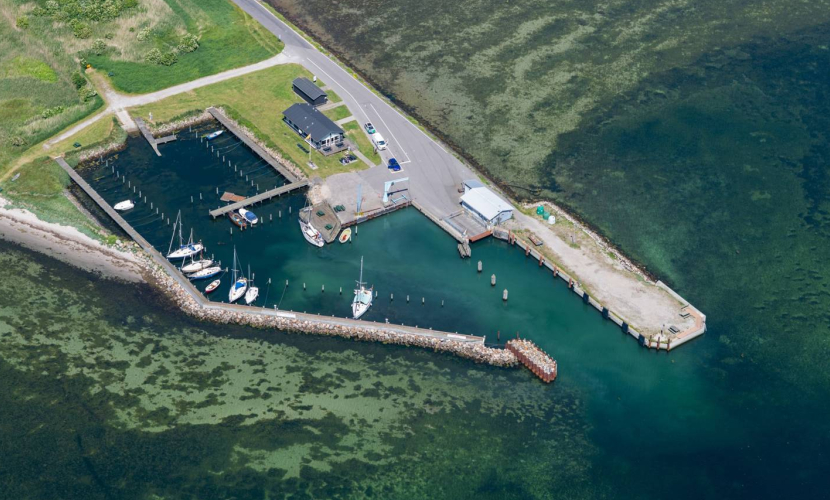

Forside / Sejlere
For gæstesejlere
En lille, rolig havn midt i Smålandshavet — med eget havnehus, mastekran og cykler klar til at tage dig rundt på øen.
Havnen på kort
Luftfoto af Askø Havn med de vigtigste faciliteter markeret. Ikke et søkort. Brug altid et opdateret søkort og havnelods til selve indsejlingen og dybgangsforhold.

CykeludlejningAskø Havn set fra luften. 17 sejlbådspladser og 43 jolle- & bådpladser ligger i den lukkede bassin til venstre.
Ikke et søkort. Se det rigtige kort over øerne, og brug altid officielt søkort til navigation.
Priser & betaling
Pris pr. døgn for gæstesejlere. Alle priser er inkl. moms og adgang til toilet og bad.
| Bådlængde | Pris pr. døgn |
|---|---|
| 0 – 7,99 m | 205 kr |
| 8 – 10,99 m | 225 kr |
| 11 – 13,99 m | 270 kr |
| 14 – 16,99 m | 320 kr |
| 17 – 19,99 m | 385 kr |
| 20 m og derover | 22 kr pr. meter |
| Strøm | 26 kr pr. døgn |
Du betaler for din plads online — vælg den måde, der passer dig:
Bekræftelse og kvittering sendes til din e-mail. Der kan også betales med kreditkort og MobilePay ved selvbetjeningsterminalen.
Fastliggere — årlig pris efter pladsbredde, inkl. moms:
Autocampere: 205 kr pr. døgn inkl. velfærdsfaciliteter, strøm 26 kr pr. døgn.
Priserne er fra Lolland Havnes takstblad 2026. Se det officielle takstblad for de altid gældende priser.
Kom i land
Askø og Lilleø er flade og små nok til at cykle rundt på en eftermiddag. Lej en cykel ved havnen, og handl ind hos øens købmand — begge dele passes af beboerforeningens frivillige.
Selvbetjening ved havnen. Cyklerne er mærket med et lille skilt på styret, og din betaling går til vedligehold og nye cykler.
Betal kontant i postkassen på skurets væg, eller med MobilePay 816345. Spørgsmål? Ring på 22 63 74 95.
Ja, du kan handle på øen. Askø Købmand har dagligvarer, lokale produkter, kaffe og kage — og varer kan forudbestilles på telefon eller mail. Cirka 2 km fra havnen: ca. 25 min at gå, eller få minutter på cykel.
Og når du er i land: kirken med den gotiske altertavle, Askø Museum, den afmærkede kirkesti og æbleplantagerne på Lilleø ligger alle inden for cykelafstand. Se øens seværdigheder →